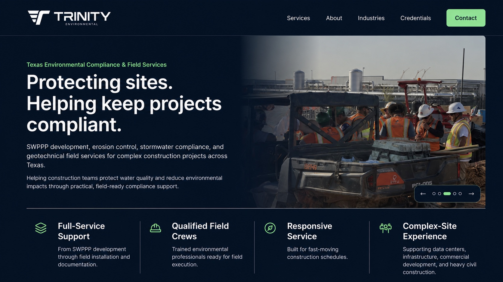

01 Client Website
Trinity Environmental
Designed and launched Trinity Environmental's first full website, organizing five service lines, three priority industries, professional credentials, and field experience into a clear path from company evaluation to direct contact.
- Digital Strategy
- UX/UI Design
- Front-End Development